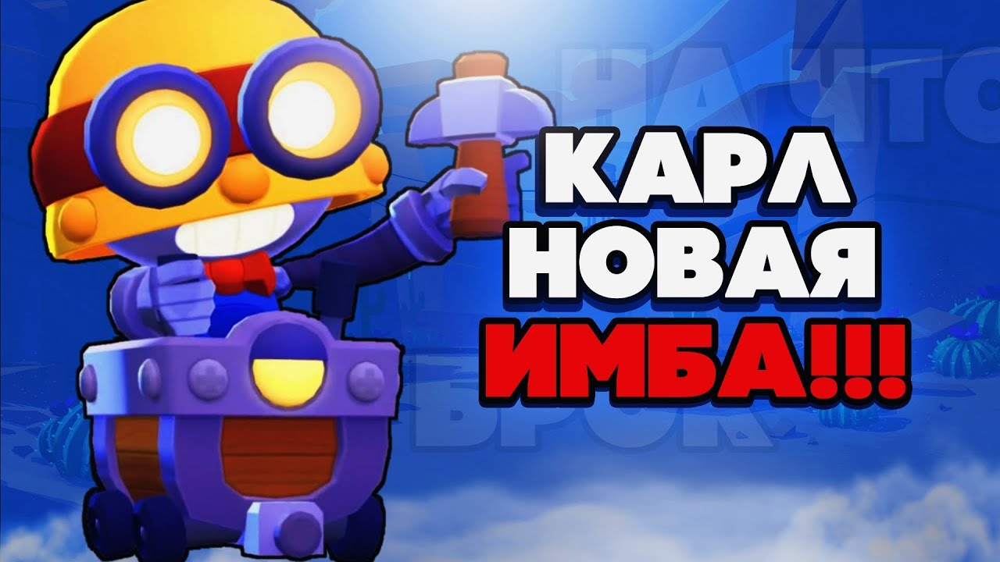

Карл

Карл имеет нормальную скорость передвижения, среднее количество здоровья и урона. Он кидает свою кирку, которая при столкновении с препятствием или пролетев максимальную дистанцию, возвращается обратно к нему. Его Супер позволяет ему вращаться и двигаться намного быстрее, нанося урон всем, кто попал под его удар. Во время использования гаджета «Клапан сброса» Карл оставляет опасный для врагов след, наносящий 400 очков урона ежесекундно. С его Звёздной силой «Усиленный бросок» кирка Карла летит на 12% быстрее. Звёздная сила «Защитный пируэт» даёт Карлу щит во время использования Супера, что уменьшает наносимый противниками урон на 35%.
На главную